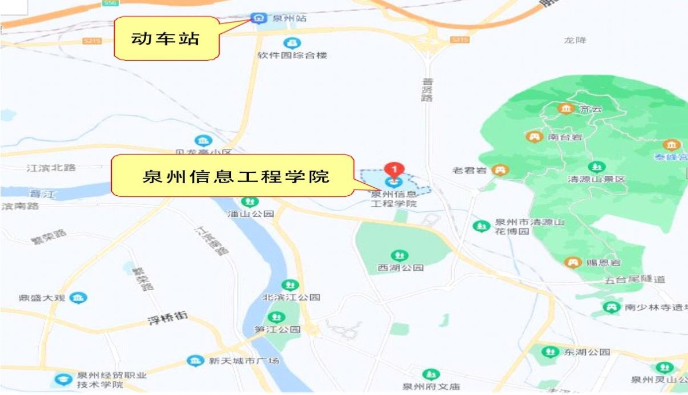
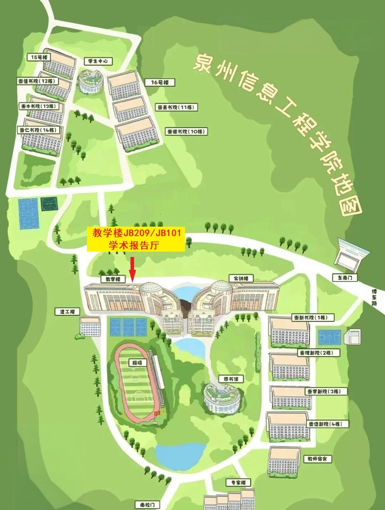

为了更好地促进我省人工智能领域的科技创新，促进智能科学与技术人才队伍的成长，兹定于2026年11月6日—8日在福建省泉州市召开“福建省人工智能学会2026年学术年会暨第五届闽台非遗数字化保护与智能处理学术会议”，其中“第五届闽台非遗数字化保护与智能处理学术会议”的主题是“多模态大模型赋能闽台非遗的传承与创新”。本次会议由福建省人工智能学会主办，泉州信息工程学院承办，厦门大学、福州大学、福建师范大学、福建农林大学、华侨大学、集美大学、闽南师范大学、闽江大学、闽台非遗文化数字化保护与智能处理文化和旅游部重点实验室、闽台文化数字化传承与智能计算福建省高校工程研究中心、福建浙大校友会计算机与软件分会等单位协办。
会议组委会热忱邀请您参加本次大会，交流人工智能相关领域最新的研究成果，共商福建省人工智能学科教育的发展大计。现将会议相关事宜通知如下：
一、会议时间
2026年11月6日—11月8日
二、会议地点
泉州信息工程学院（地址：泉州市丰泽区博东路249号）。
三、会议内容
1. 主论坛：邀请5位国内同行专家作大会特邀报告；
2. 分论坛：围绕大语言模型与智能体、机器人与具身智能、非遗数字化保护与智能处理、人工智能教育、脑机接口与智能疗愈等主题进行交流研讨，其中非遗论坛围绕“多模态大模型赋能闽台非遗的传承与创新”展开；
3. 圆桌对话：人工智能70周年；
4. 福建省人工智能学会常务理事会会议；
5. 闽台非遗文化数字化保护与智能处理文化和旅游部重点实验室工作会议（学术委员会成员参加）；
6. 福建浙大校友会计算机与软件分会理事会会议。
四、参会人员
福建省人工智能学会理事、会员，高校、IT企业、科研院所、政府部门、事业单位等从事计算机及相关专业的人员。
五、其他事项
1. 请各位参会代表于11月7日前扫描下方二维码，填写线上参会回执完成会议报名。
2. 会务费（往返交通费及食宿费自理）：
| 会务费 | 即日起—10月25日 | 10月26日—11月7日 |
| 非学生参会者 | 900元/人 | 1100元/人 |
| 学生参会者 | 500元/人 | 700元/人 |
会议接受现场注册，但不保证会议资料，请尽量提前注册。会务费采用对公转账方式支付，发票由泉州市朋派文化创意有限公司在会议结束后一周内开具（银行账户：152300100101173383；开户银行：兴业银行股份有限公司泉州分行）。
3. 会议统一安排酒店入住（详见附件1）：泉州酒店，预订电话：13959999931（苏经理）；泉州华侨大厦，预订电话：13505927059（郑玉玲）。
4. 参会报到时间、地点：2026年11月6日10:00—21:00（泉州酒店南馨楼）。
5. 联系方式：
会务联系人：
黄燕榕：15859776737（泉州信息工程学院）
酒店预订：
苏经理：13959999931（泉州酒店）
郑玉玲：13505927059（泉州华侨大厦）
学会联系人：
陈毅东：13063057751
郑旭玲：13306005915
黄翊翔：13666021047
实验室联系人：
曾华琳：18250855083
福建省人工智能学会 闽台非遗文化数字化保护与智能处理文化和旅游部重点实验室
2026年10月19日
福建省人工智能学会2026年学术年会暨第五届闽台非遗数字化保护与智能处理学术会议议程
| 2026年11月6日（周五） | |||
| 时 间 | 程 序 | 地 点 | 主持人/参与人 |
| 14:30～21:00 | 会议代表入住/报到 | 泉州酒店大堂 | 会务组 |
| 晚餐，17:30～19:00，地点：泉州酒店 | |||
| 19:00～20:00 | 福建省人工智能学会理事会 | 泉州酒店 | 福建省人工智能学会理事 |
| 20:00～21:00 | 文旅部重实验室工作会议 | 泉州酒店 | 文旅部重实验室学术委员会成员 |
| 2026年11月7日（周六）上午，地点：泉州信息工程学院教学楼2楼JB209学术报告厅 | ||
| 时 间 | 程 序 | 主持人/参与人 |
| 08:00～08:30 | 会议代表报到 | 会务组 |
| 08:30～09:00 | 开幕式 1. 泉州信息工程学院领导致辞 2. 学会理事长致辞 | |
| 09:00～09:20 | 全体代表合影 | 会务组 |
| 09:20～10:00 | 大会报告（一） | |
| 10:00～10:20 | 茶歇 | 会务组 |
| 10:20～11:00 | 大会报告（二） | |
| 11:00～12:00 | 圆桌对话：人工智能70周年 | |
| 午餐，12:00～14:00，地点：泉州信息工程学院第一餐厅 | ||
| 2026年11月7日（周六）下午 | |||
| 14:00～16:00 | 大语言模型与智能体论坛 地点：教学楼2楼JB209学术报告厅 | 机器人与具身智能论坛 地点：教学楼1楼JA101学术报告厅 | |
| 16:00～16:20 | 茶歇（会务组） | ||
| 16:20～18:20 | 非遗数字化保护与智能处理论坛 地点：教学楼2楼JB209学术报告厅 | 人工智能教育论坛 地点：教学楼1楼JA101学术报告厅 | 福建浙大校友会计算机与软件分会理事会会议 地点：教学楼1楼JB101学术报告厅 |
| 晚宴，19:00～20:30，地点：泉州信息工程学院第一餐厅 | |||
| 2026年11月8日（周日）上午，地点：泉州信息工程学院教学楼2楼JB209学术报告厅 | ||
| 时 间 | 程 序 | 主持人/参与人 |
| 08:00～08:40 | 大会报告（三） | |
| 08:40～09:20 | 大会报告（四） | |
| 09:20～10:00 | 大会报告（五） | |
| 10:00～10:20 | 茶歇 | 会务组 |
| 10:20～12:20 | 脑机接口与智能疗愈论坛 | |
| 午餐，12:20～14:00，地点：泉州信息工程学院第一餐厅 | ||
| 2026年11月8日（周日）下午：文化考察、学术交流活动与离会 | ||
附件1：住宿推荐
为方便各位参会代表，会务组推荐以下两家酒店供大家参考。请参会人员根据自身行程和需求自行选择，并直接拨打酒店预订电话进行预订。
| 酒店名称 | 地址 | 预订电话 | 房型及协议价（元/间/晚，各房型均含早餐） |
| 泉州酒店 | 福建省泉州市鲤城区庄府巷22号 | 13959999931 苏经理 | 东晖楼：标准双床房（380元）；高级商务大床/双床（480元） 南馨楼：豪华商务大床/双床（538元）；观景豪单/豪标（568元）；观景行政大床/双床（618元） |
| 泉州华侨大厦 | 福建省泉州市鲤城区百源路1号 | 13505927059 郑玉玲 | 标准房（320元）；大床房（330元）；湖滨套（450元）；商务套（480元） |
预订说明：
1. 参会人员致电预订时，请说明是参加“福建省人工智能年会”，即可享受上述会议协议价；
2. 预订及住宿费用由参会人员自行与酒店办理入住及结算。因各酒店房型数量有限，请各位参会人员合理安排行程，尽早自行致电预订；
3. 如有特殊需求（如提前入住、延迟退房、无烟房等），请在预订时直接向酒店预订人员提出，酒店将视当日房态尽量满足您的需求。
会议交通指南
一、泉州站→泉州酒店
（1）乘坐动车到达泉州站后，出站口往右走到枢纽站，换乘滴滴快车或出租车至泉州酒店（约13公里，费用预计40元）；
（2）自驾，直接导航定位“泉州酒店”。
二、泉州站→泉州信息工程学院
（1）乘坐动车到达泉州站，出站口往右走到枢纽站，乘坐K1路、3路、K602路、X1路、201路、202路公交车至泉州信息工程学院站下车，往前走约100米即到学校；
（2）乘坐动车到达泉州站，出站后换乘滴滴快车或出租车至泉州信息工程学院（约8公里），费用预计20元；
（3）自驾，直接导航定位“泉州信息工程学院—东北门”。

